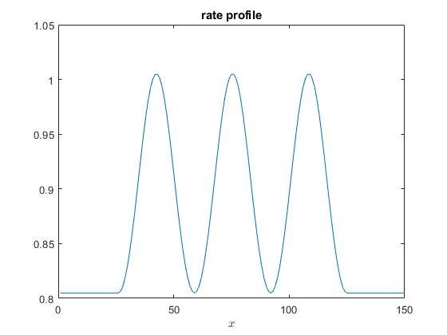
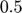
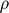
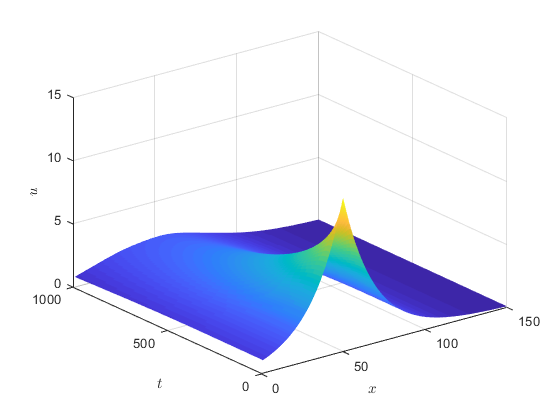
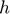
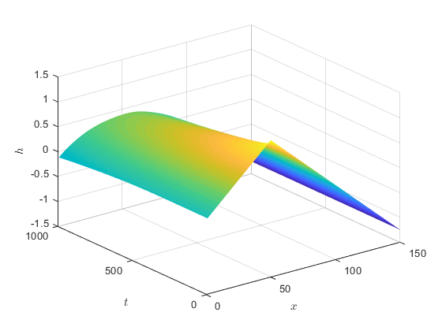
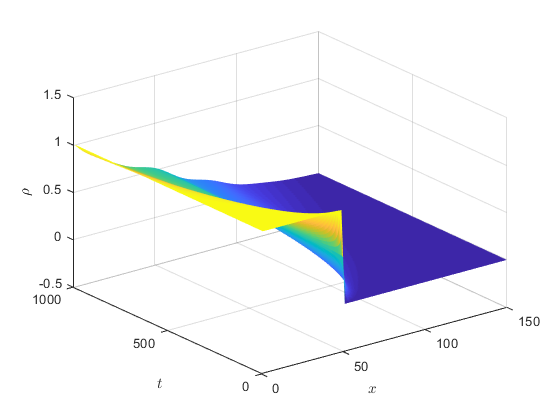

Contents
dTASEP-WASEP
In these notes we integrate the mean-field hydronamics limit of a weakly asymmetric simple exclusion process dTASEP-WASEP with position-dependent rates.
Define physical and numerical parameters.
X=150; deltat=0.002; deltax=0.05; T=1000;
Model parameters.
rate_profile = [repelem(0.9048, 25),exp(0.1*sin(linspace(-pi/2,-pi/2 + 6 * pi,100))), repelem(0.9048, 25)] - 0.1; %linspace(3,4,150) % rate_profile = cumsum([repelem(0.9048, 25),exp(sin(linspace(-pi/2,-pi/2 + 6 * pi,100))), repelem(0.9048, 25)]) * 0.01 +3; figure(10) plot(rate_profile) title('rate profile') xlabel('$x$', 'Interpreter','latex') D = 0.5 * rate_profile; % D = repelem(1, 150);
Check stability of numerical scheme
The numerical scheme we are going to use is stable everywhere in the bulk if `max(D(x))*deltat/deltax^2` is less than .
fprintf("%f\n", max(D(2:(X-1)))*deltat/deltax^2);
0.401868
Set up workspace variables and initial/boundary conditions
u = zeros(T,X);
J = zeros(T,X-2);
rho0 = [repelem(1,50), repelem(0,100)]; %rand(1,150) =
We use Dirichlet boundary conditions for the density ; we also need the Cole-Hoft transformed version.
rhoL = rho0(1); rhoR = rho0(X); robinL = -2-2*(2*rhoL-1)*deltax; robinR = -2+2*(2*rhoR-1)*deltax;
Cole-hopf transform of the initial profile:
u(1,:) = exp(cumsum(2*rho0-1)*deltax);
x=2:(X-1); % bulk
xm1=1:(X-2);
xp1=3:X;
Solve the diffusion equation for `u`.
for t=2:T u(t,x) = u(t-1,x) + deltat * D(x) .* (( u(t-1,xm1) + u(t-1,xp1) - 2*u(t-1,x))/deltax^2 - u(t-1,x)); % Robin boundary conditions: u(t,1) = u(t-1,1) + deltat * D(1) .* (( robinL*u(t-1, 1) + 2*u(t-1,2))/deltax^2 - u(t-1,1)); u(t,X) = u(t-1,X) + deltat * D(X) .* (( 2*u(t-1,X-1) + robinR*u(t-1,X))/deltax^2 - u(t-1,X)); % J(t,:) = rate_profile(x) .* (0.25 - 0.25*(u(t,xm1)+u(t,xp1)-2*u(t,x))/(2*deltax)./u(t,x)); end figure(1) imagesc([0,100],[0,100],flipud(u)); s = surf(u); s.EdgeColor = 'none'; zlabel('$u$','Interpreter','latex') xlabel('$x$','Interpreter','latex') ylabel('$t$','Interpreter','latex')
Inverse Cole-Hopf transformation
This finally retrieves the evolution of the height variable  and the density profile .
h=log(u)*0.5; figure(2) s = surf(h); s.EdgeColor = 'none'; zlabel('$h$','Interpreter','latex') xlabel('$x$','Interpreter','latex') ylabel('$t$','Interpreter','latex') %hup1=[h(:,2:150), h(:,1)]; %hum1=[h(:,150), h(:,1:149)]; %rho=(hup1-hum1)/deltax + 0.5; rho=zeros(T, X); %bulk: rho(:,x)=(h(:,xp1)-h(:,xm1))/(2*deltax)+0.5; %boundaries: rho(:,1)=rhoL; rho(:,X)=rhoR; figure(3) s = surf(rho); s.EdgeColor = 'none'; zlabel('$\rho$','Interpreter','latex') xlabel('$x$','Interpreter','latex') ylabel('$t$','Interpreter','latex') 